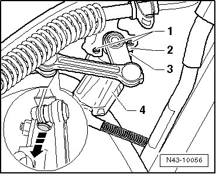
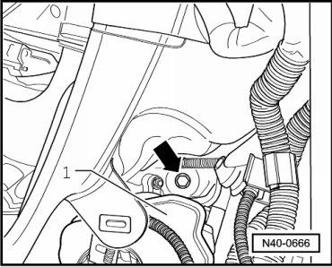
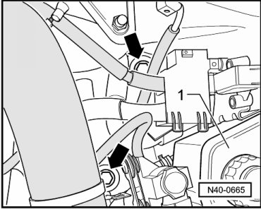
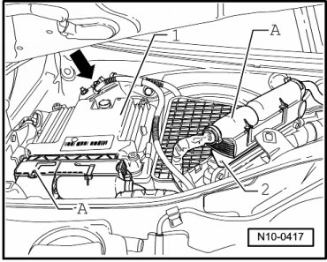
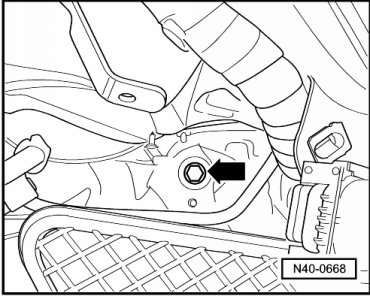
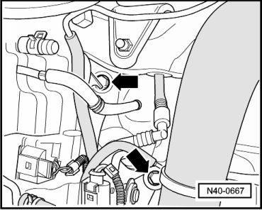
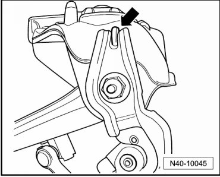
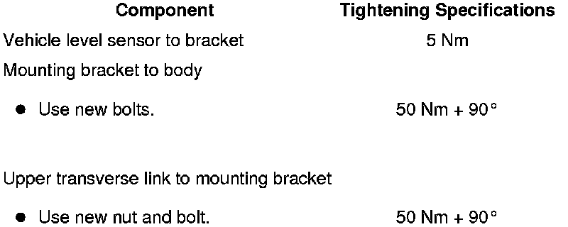

Level Control System Sensor Bracket
Level Control System Sensor Bracket
Special tools, testers and auxiliary items required
• Torque wrench (VAG 1331)
Removing
CAUTION!
Before starting work, stabilizer bars must be coupled in vehicles with separable stabilizer bars. Otherwise, there is the danger of injury caused by unintentional separation.
- Remove the front wheel housing liner.
- Disconnect the connector - 4 - from the vehicle level sensor - 3 -.

- Remove the pin in - direction of arrow - and unclip the connecting link from the upper control arm.
- Remove strut. refer to --> [ Strut ] Strut.
Removing Left Mounting Bracket
- Remove bolt - arrow - beneath reservoir - 1 - for brake fluid.

- Remove bolts- arrow - beneath reservoir - 1 - for hydraulic fluid.

Removing Right Mounting Bracket
- Disengage harness connector from Engine Control Module (ECM) - 2 - and disconnect it.

- Remove control module.
- Remove bracket for ECM - 2 -.
Bolts for bracket (quantity 3) are now accessible.
Remove bolt - arrow -.

Remove bolts - arrows -.

Continuation for Both Sides
- Remove mounting bracket.
- Remove the bracket for the vehicle level sensor from the mounting bracket.
Installing
Installation is the reverse of removal, with special attention to the following:
Bracket for vehicle level sensor must make contact with catch at mounting bracket - arrow -.

- Connect the bracket with the vehicle level sensor to the mounting bracket. Refer to --> [ Front Suspension Assembly Overview ] Front Suspension.
- Install mounting bracket. Refer to --> [ Front Suspension Assembly Overview ] Front Suspension.
- Install strut. Refer to --> [ Strut ] Strut.
- Install the front wheel housing liner.
- Perform a basic setting on the level control system using --> vehicle diagnosis, testing and information system (VAS 5051B) "Guided Functions".
Tightening Specifications
